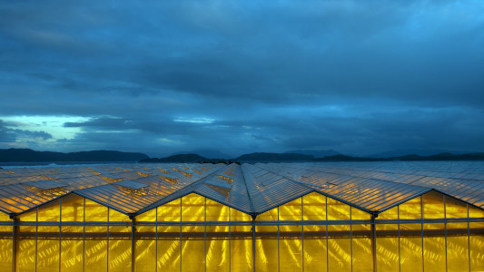

May I have a moment of your time to talk about Tomato farming?
No, you may not have a moment of my time to talk about tomato farming.
Here is an example of how incredible high-tech farming can be: IMAGE"
Here is another example os a high-tech farming greenhouse:
